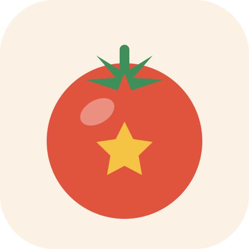

ポモとごほうび1ポモで10pt、タスク完了で20pt。完了するとおまけのガチャ券ももらえます（お金はかかりません）。
ほかのタブを見ている間も、終わったら通知でお知らせします。スマホで画面を消している間は、端末によって通知が遅れることがあります（タイマーの時間そのものはずれません）。
データはこの端末のブラウザの中だけに保存されます（どこにも送りません）。機種変更やブラウザのデータ削除に備えて、ときどき書き出しておくと安心です。
ポモとごほうび ・ データはこの端末だけに保存